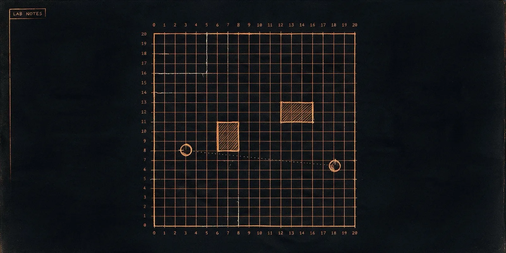

Lab Notes
A homemade AI evolution lab, one week, honest nulls included.

I built a small arena where simple bots fight each other, and let an LLM rewrite the losers into new bots, generation after generation. The question I actually wanted answered wasn't "can I make a bot win" — it was whether a colony of AI agents can accumulate real, shared knowledge over time, the way human culture does, instead of just getting reshuffled by a smarter model. I ran eight experiments over one week to find out. Some of them worked. Two of them are null results I'm keeping in the record on purpose, because the honest version of this story is more interesting than the flattering one. Numbers below are exactly what the runs produced — no rounding up. Full source and every raw run artifact are on GitHub.
The Week I Built an Evolution Lab
The full story: the bet, the arena, the tool libraries, the false law the colony obeyed into deaths, the trial that caught it, and the scoreboard at the end. A false map, two repealed laws, and a control that out-covered science.
Run 0Dry Prototype
The whole loop — arena, archive, sandbox, replay, report — proven end to end before spending a cent. Two bugs found by watching raw replays instead of trusting the summary.
First Haiku Run
Swap the mock mutator for a real model. Coverage jumps, inherited tools get called a quarter-million times — and a tempting but unproven story starts to form.
Three-Arm Ablation
The control I should have run first. Verdict: the tool library did nothing measurable. A null result, owned in public.
Bold Mutator on Groq
A bolder prompt makes tool adoption explode — 726,000 inherited-tool calls — but bold mutations of complex bots start crashing at runtime. The complexity death spiral.
Error Feedback
Feed a bot's own crash back into the next mutation prompt. The death spiral is cured — and the run nearly beats every other arm on both axes at once.
Lessons Library
Distilled crash-lessons get injected into every prompt — untested. One lesson is flat wrong, and the colony obeys it into new deaths. Unfiltered culture breeds superstition.
Living Playbooks
Lessons must survive an A/B trial before they're canonized, and can be retired later. A real superstition gets caught and rejected — on camera.
The Long Game
300 generations, no new mechanisms — just time. All-time records fall. Then the final scoreboard delivers the series' honest closing line.
The Trial Goes On Trial
The instrument gets audited. Every law the colony ever canonized fails a real significance test, a control with no descent ties the coverage record, and a properly gated 300-gen colony canonizes nothing at all.
What the Colony Threw Away
Analysis locked before the data existed. Across 14 colonies the lessons work — and the colony's own gate correctly rejected almost every one of them.
The Receiver Problem
The same lessons on a weaker model do nothing at all — a null tight enough to exclude Run 9's effect. The series ends on what that means for agent memory.
Raw receipts — every archive, lessons ledger, metrics file, and match replay: github.com/godfreystorm/ratchet-lab